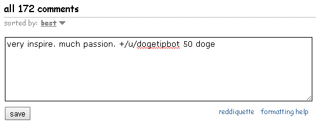

Tipping - spread the Doge-ness
Last updated on Jan 25, 2014.
Tipping is possible on Twitter and Reddit (and possibly other places, but this is what we have experience with). Tipping brings much joy and is an essential part of the community. It is also important because it introduces people to the wonders of Dogecoin and keeps Doge in circulation.
Tipping with Reddit
Thanks to the dogetipbot, You can easily add tips to comments and replies. Their official guide is found here.
1. Register with the tip bot
There are two ways to register. One is if someone has already sent you a tip and the other is if you are self registering. If you have received a tip, the bot will message you asking if you want to accept. Reply to the message with +accept and dogetipbot will create your account. Skip to step two if you did this, otherwise continue on.
To register yourself, log into Reddit and send a direct message to the bot with +register. The bot will reply with a confirmation message, but during high volume periods of traffic it may take longer.
Note: The tip bot is currently slower than normal due to a massive increase in tip volume. You can read more about it here. It is getting improved so be patient! The next version is right around the corner.

2. Deposit to the balance
Your registration confirmation will include your deposit address and current balance. You must have something to tip with, so open your wallet and send Doge to the provided address. If for any reason you forget your deposit address or tipbot balance, just message +info to the dogetipbot.

3. Send tips in your comments / replies
Once you have a positive tip bot balance, you can tip fellow redditors by including +/u/dogetipbot AMT_TO_SEND doge somewhere in your comments or replies, where AMT_TO_SEND is the amount you want to send over. Comments will tip the original poster, while replies tip the person you are replying to. For example:
If you want the tip bot to reply as well, make sure to include verify after "doge", like "+/u/dogetipbot 100 doge verify".

Both you and the receiver of the tip will get a confirmation message if the tip successfully goes through. If you sent a tip, the confirmation message will include your current balance.

Withdraw from your balance
You can withdraw what you deposited / tips received if you have a positive balance. To get Doge back, send a direct message to dogetipbot with +withdraw YOUR_ADDRESS AMT_TO_TAKE_OUT doge. Example below.

View your tipbot account info and history
If you need to check your tipbot balance or forget your deposit address, you can message the dogetipbot directly with +info and it will send you an account summary. If you want to view your transaction history, you can direct message the dogetipbot with +history and receive a detailed report.
There are also shortcuts to these actions in your tip sent / received confirmation messages.

Tipping with Twitter
1. Register with the tip bot
Visit this link and log in with your twitter credentials.
2. Make a positive balance
After authenticating your account, you'll receive a series of instructions for depositing Dogecoin to begin tipping. Below is a screen shot of what you should see.

Send tips!
Below is an example of how to use the tip bot once you have a positive balance:

When you send a tip over twitter, your tweet will receive a favorite by the dogetipbot if it was successfully sent.

Note: the amount received by the bot will have a 1 Doge reduction because a Doge transfer consumes 1 Doge. For example, if you gave a tip of 50, the recipient will receive 49.
Collect tips!
To review your twitter doge balance, politely ask the dogetipbot by replying with balance.

To withdraw your monies, just provide the the dogetipbot with your send address and it will kindly send you your doge fortune!